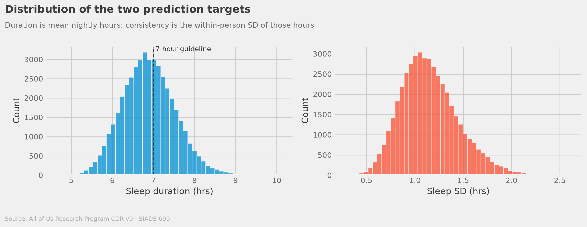
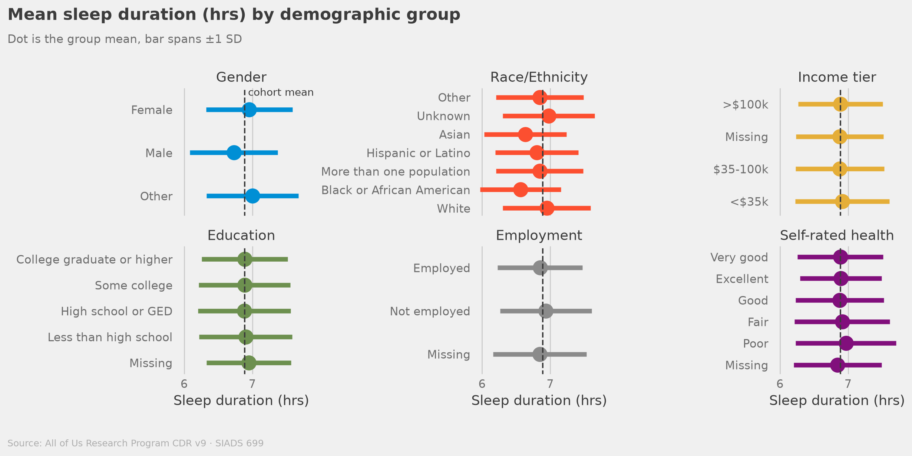
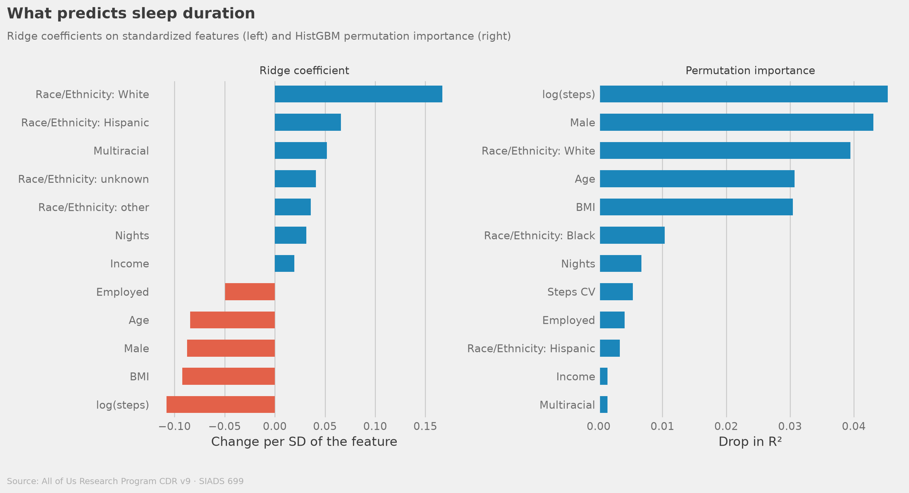
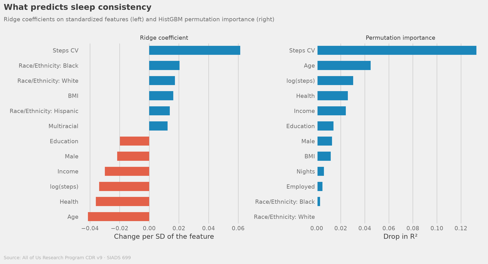
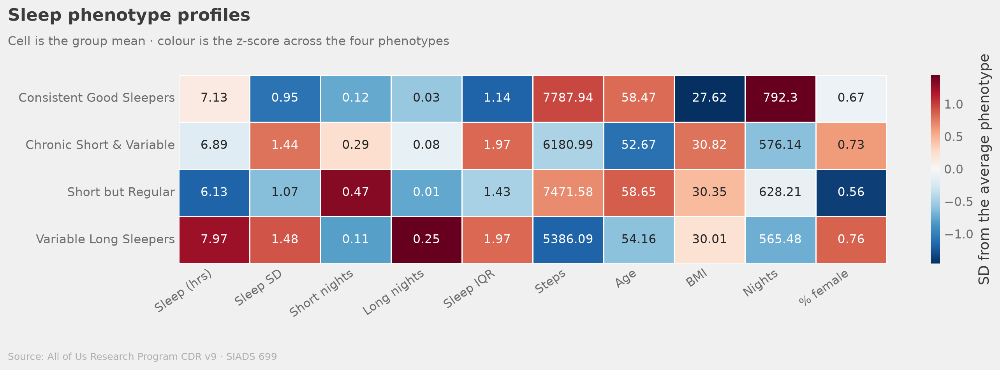
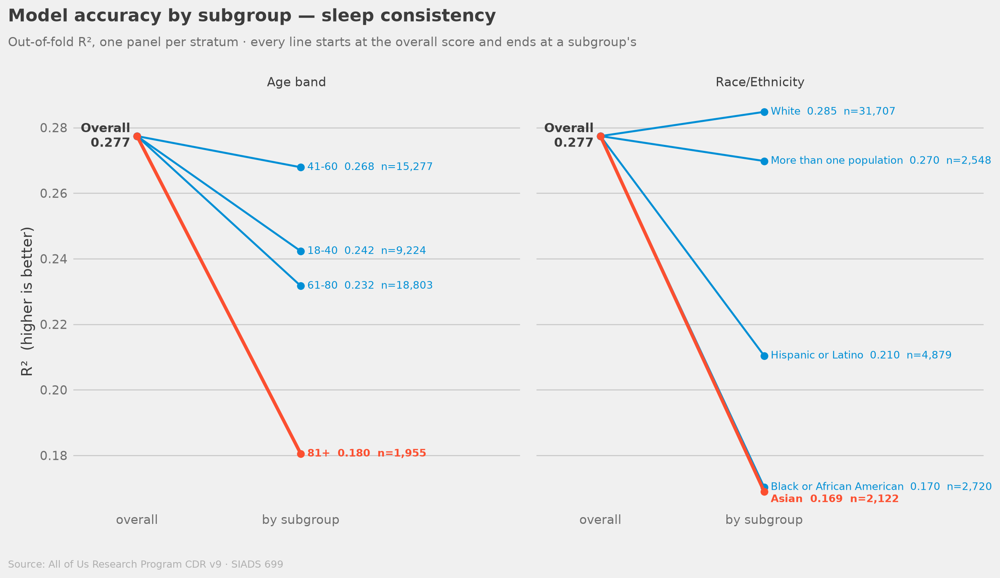
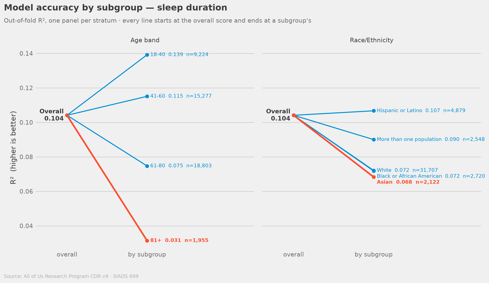

SIADS 699 · Capstone · Team Sleep Deprived · 2026
Lifestyle shapes how consistently you sleep
more than how long
Predicting sleep duration and consistency from Fitbit wearables
in 45,259 All of Us Research Program participants
Sophia Boettcher · Auston Balwinski · Hunter Belous · Jared Fox · All of Us CDR v9 · University of Michigan MADS
The Problem
1 in 3 Americans
is chronically sleep deprived
Short sleep is linked to obesity, cardiovascular disease, diabetes, and reduced cognitive function — yet we know surprisingly little about who is most at risk and why.
CDC, Insufficient Sleep Is a Public Health Problem (2016)
The Opportunity
45,259 people wearing Fitbits.
What can we learn?
🌙 Sleep duration
📊 Sleep consistency
👟 Daily steps
📈 Activity regularity
🎓 Education & income
⭐ Self-rated health
All of Us Research Program CDR v9 · Fitbit sleep_daily_summary · ≥30 valid nights · 4–12 hrs range
The Cohort
Who are we looking at?
70% White
11% Hispanic · 6% Black · 6% multiracial · 5% Asian
Mean BMI 29.4
Finding 1 · Sleep Distribution
Most people aren't getting enough

The Scale of the Problem
58%
of participants average
fewer than 7 hours a night
That's 26,348 people in our cohort alone — below the guideline while wearing a device that tracks their sleep. A quarter of all nights fall under six hours.
Finding 2 · Group Patterns
Group differences are small next to individual variation

The Models
Can we predict sleep from lifestyle?
| Model |
Duration R² |
Consistency R² |
| Baseline (predicts the mean) |
0.000 |
0.000 |
| Ridge |
0.103 |
0.250 |
| Random Forest |
0.095 |
0.269 |
| HistGBM |
0.104 |
0.277 ↑ +11% |
Ridge and HistGBM tie on duration. Boosting gains only on consistency.
5-fold cross-validation · One feature matrix for every model, so the spread is the estimator alone
Interpreting the Results
"R²=0.28 doesn't mean our model failed.
It means sleep is genuinely complex."
Genetics, stress, medications, and environment are unmeasured.
Out-of-fold predictions are near-unbiased across their whole range — the missing variance is real, not model error.
Consistent with Patel et al. 2012
St-Onge et al. 2016
Chinoy et al. 2021
Finding 3 · Feature Importance
No single factor drives sleep duration

Activity leads at 0.045, but gender (0.043), race/ethnicity (0.039), age (0.031) and BMI (0.030) sit right behind it — the signal is spread thin, which is why duration is the harder target.
Finding 4 · Feature Importance
Irregular activity drives sleep consistency

The Biggest Finding
3×
how far irregular activity outranks
the next predictor of sleep consistency
The activity–sleep relationship is curved, not age-moderated. Sleep regularity tracks how
erratic your daily activity is, and the slope barely moves across age quartiles.
No interaction term we tested earned a place in the model.
Finding 5 · Sleep Phenotypes
Four phenotypes describe the cohort

These are cuts through one continuous cloud, not natural kinds — k=4 is a choice we made for interpretability, and the silhouette narrowly prefers k=3.
The Four Sleep Phenotypes
✅
Consistent Good Sleepers
17,796
39% of cohort
😴 7.13 hrs · SD 0.95
👟 7,788 steps · 12% short
⚠️
Short but Regular
12,186
27% of cohort
😴 6.13 hrs · SD 1.07
👟 7,472 steps · 47% short
❌
Chronic Short & Variable
10,703
24% of cohort
😴 6.89 hrs · SD 1.44
👟 6,181 steps · 29% short
🔄
Variable Long Sleepers
4,574
10% of cohort
😴 7.97 hrs · SD 1.48
👟 5,386 steps · 11% short
KMeans k=4 · Features: mean sleep, night-to-night SD, % short nights, % long nights · Silhouette also supports k=3
Finding 6a · Model Fairness — Consistency
The racial gap sits on consistency

Finding 6b · Model Fairness — Duration
The age gap sits on duration

A Critical Limitation
2 gaps
on two different outcomes,
along two different axes
Race, on consistency: Black R² = 0.170 and Asian R² = 0.169 against White R² = 0.285
— shortfalls of 40% and 41%.
Age, on duration: R² falls from 0.139 at 18–40 to 0.031 at 81+ — a 77% shortfall, and
the largest in the analysis.
Honest Assessment
What this study cannot claim
- 🚫Causal claims — this is cross-sectional, not experimental
- 🚫Generalizability — Fitbit wearers are healthier and higher-SES than average
- 🚫Equal performance — 40–41% gaps by race and a 77% gap by age are structural failures
- 🚫Unmeasured determinants — shift work, resting HR, chronic conditions and neighbourhood are absent
- 🚫Night-level dynamics — participant-level aggregation loses within-person variance
What Could Be
Imagine a future where wearable data
guides personalized sleep interventions
🏥
Clinical Translation
Phenotype-specific interventions: Short but Regular patients need duration extension, not schedule fixing
⚖️
Equity in AI
Fairness-aware models and subgroup-stratified development for the groups with the largest shortfalls
📡
Longitudinal Data
Night-level time series modeling to capture within-person dynamics and causal relationships
🧬
Multi-modal Integration
Combine wearables with genetics, EHR, and environmental data for a complete picture
Takeaways
What we found
- ✅Lifestyle predicts sleep — R²=0.104 (duration) and R²=0.277 (consistency)
- ✅Consistency > duration — behavioral factors shape regularity more than length
- ✅Model class matters on one target only — boosting wins by 11% on consistency and ties on duration
- ✅Four phenotypes describe the cohort — Chronic Short & Variable is the clearest outreach target; Short but Regular is the one a variability screen would miss
- ⚠️Two fairness gaps — 40–41% by race on consistency, 77% by age on duration
SIADS 699 · Team Sleep Deprived · 2026
Sleep is not a luxury.
Understanding it is.
All of Us Research Program · 45,259 participants · All code open source
github.com/Auston-B/sleep-predict-capstone · sleep-predict-capstone.streamlit.app